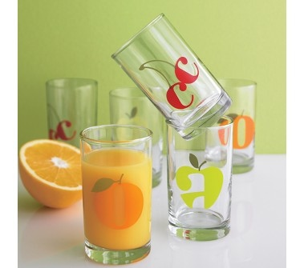

Special occasions call for special gifts. The Jenware line of housewares and clothing
can be personalized fot the ones you love... the happy couple celebrating their new life together...
the recent graduate... or a new baby.
Testimonials
"The Jenware onesies were the hit of the baby shower. The custom letter "a" and handmade quality made this gift really stand out among the cookie-cutter clothes from the department store."
"Thanks for the cool Jenware barware. I couldn't wait untill I found "Mr.Right," so I just bought a set for myself! My freinds always want to know where I got them so I send them to your site.""
GlassWARE

The perfect wedding gift. Our highest quality glassware is sandblasted by hand with the alphabet/image of your choice. Choose from 26 letters
and 24 typefaces. custom designs are also avalaible for an additional design charge. Allow
4 to 6 weeks for delivery
BabyWARE
Tired of sickly-sweet? These onesies with oversized letter in bold, bright patterns are a welcome change from the usual pastel fare. Monogrammed pants and baby shoes are also available. Tell us the initial and mix and match from 6 fun fabric patterns and 8 edging colors. Allow 2 to 4 weeks for delivery. Sizes: 3mos, 6mos, and 12mos.
.png) JenWare... Make It Personal
JenWare... Make It Personal